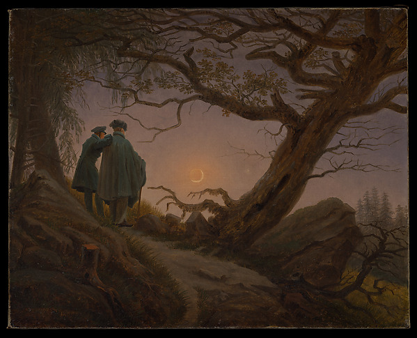

This week: The Gothic
(Today's line appears here.)
Got it with 1 extra clue.
- Work
- (the week's work)
- Author
- (author)
(The line's note appears here, as now.)

This week’s painting
Two Men Contemplating the Moon
Caspar David Friedrich, about 1825–30. The Romantic moonlight that Gothic novels were written by: ruins, bare trees, and two figures with their backs to us.
The Metropolitan Museum of Art · public domain · see it at the Met